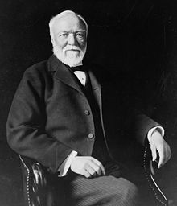

Andrew Carnegie was born in Dunfermline, Scotland, in
a typical weaver's cottage with only one main room, consisting of half the
ground floor which was shared with the neighboring weaver's family. The
main room served as a living room, dining room and
bedroom.
He was
named after his legal grandfather.
His uncle, George Lauder Sr., a Scottish political leader, deeply influenced him as a boy by introducing him to the writings of Robert Burns and historical Scottish heroes such as Robert the Bruce, William Wallace, and Rob Roy. Lauder's son, also named GeorgeLaunder,grew up with Andrew and would become his business partner. When Carnegie was thirteen, his father had fallen on very hard times as a handloom weaver and with the country in starvation. His mother helped support the family by assisting her brother who was a cobbler and selling potted meats at her "sweetie shop". She eventually became the primary breadwinner by the 1840s. Struggling to make ends meet, the Carnegies then decided to move with his family to Allegheny, Pennsylvania, in the United States in 1848